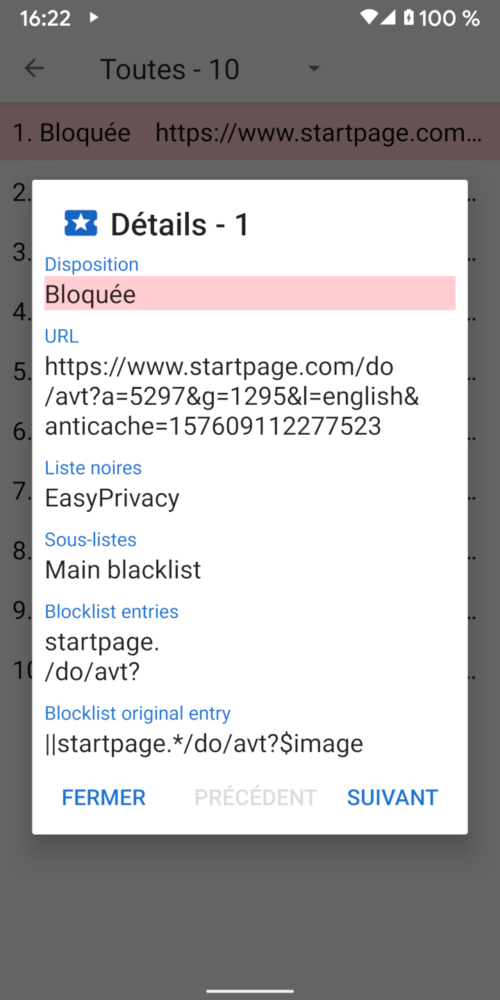

Lorsqu'une URL est chargée, elle effectue généralement un certain nombre de requêtes de ressources pour le CSS, JavaScript, des images et d'autres fichiers. Les détails sur ces requêtes peuvent être consultés dans la vue Requêtes. Le panneau de navigation contient un lien vers la vue Requêtes et indique également le nombre de requêtes bloquées. Un appui sur une requête affiche les détails de la raison pour laquelle elle a été autorisée ou bloquée.
Clear Browser inclus quatre listes noires communes basées sur la syntaxe d'Adblock: EasyList, EasyPrivacy, Fanboy’s Annoyance List, et Fanboy’s Social Blocking List. Ces listes noires sont executées par Clear Browser dans les 22 sous-listes suivantes, qui vérifient les demandes de ressources dans l'ordre indiqué.
Les listes initiales sont comparées au début de l'URL. Les listes finales sont comparées à la fin de l'URL. Les listes de domaines ne vérifient que certains domaines. Les listes tierces ne s'appliquent que si le domaine racine de la demande est différent du domaine racine de l'URL principale. Les listes d'expressions régulières respectent la syntaxe d'expression régulière. Chaque élément de sous-liste comporte une ou plusieurs entrées. Dans le cas de sous-listes de domaines, la demande de ressource n'est vérifiée par rapport à l'élément que si la première entrée correspond au domaine de l'URL principale.
En raison des limitations de d'Android WebView et de l'accélération du traitement des demandes, Clear Browser implémente une interprétation simplifiée de la syntaxe d'Adblock. Cela peut parfois conduire à des faux positifs, dans lesquels les ressources sont autorisées ou bloquées d'une manière qui n'était pas prévue par l'entrée originale. Une description plus détaillée du traitement des entrées de liste de blocage est disponible à l'adresse stoutner.com.
Clear Browser a trois listes de blocage supplémentaires.
UltraList et UltraPrivacy
bloquent les annonces et les trackers que EasyList et EasyPrivacy ne font pas. Le troisième bloque toutes les demandes de tiers.
Une demande n'est considérée comme tierce que si le domaine de base de la demande est différent du domaine de base de l'URL.
Par exemple, si www.website.com charge une image à partir de images.website.com,
cette demande n'est pas bloquée en tant que demande tierce car elle partage le même domaine de base que website.com.
Le blocage de toutes les demandes de tiers augmente la confidentialité, mais cette liste de blocage est désactivée par défaut car elle perturbe un grand nombre de sites Web.